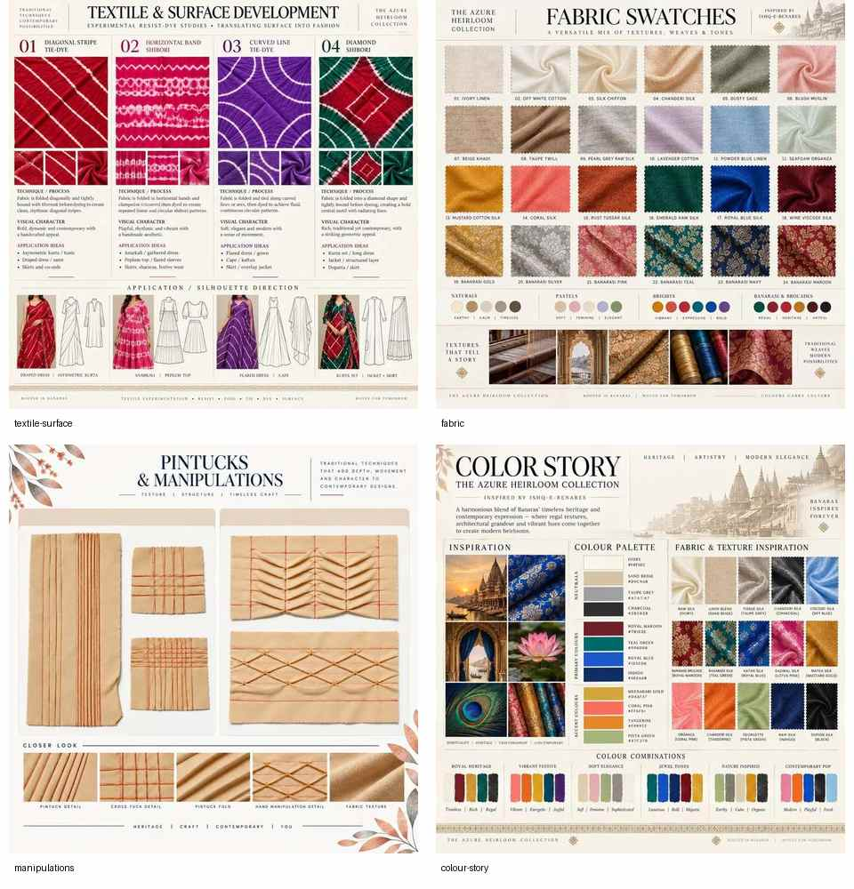
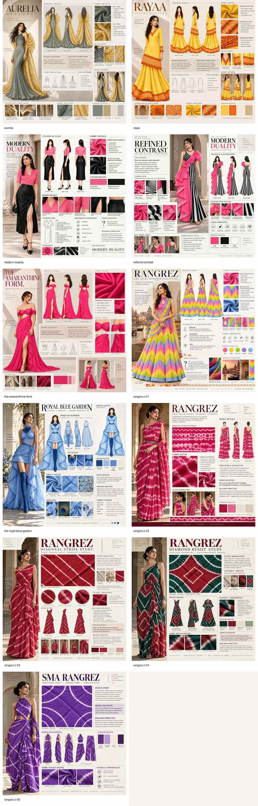

Textile & Surface
Textile / Surface / Dye2026Experimental material development

How can surface become structure?
This study develops four tie-and-dye directions — diagonal stripe, horizontal shibori, curved-line and diamond shibori — as a system for pattern, texture and visual rhythm.


Repeat, resist and rhythm.
The experiments focus on how simple resist structures can produce directional movement and visual depth. Material testing is treated as part of design development, not as a decorative afterthought.


Material decisions inform the garment.
The strongest directions are intended to move into outfit concepts as controlled surface placement, pattern and texture, creating continuity between textile experiment and womenswear outcome.
